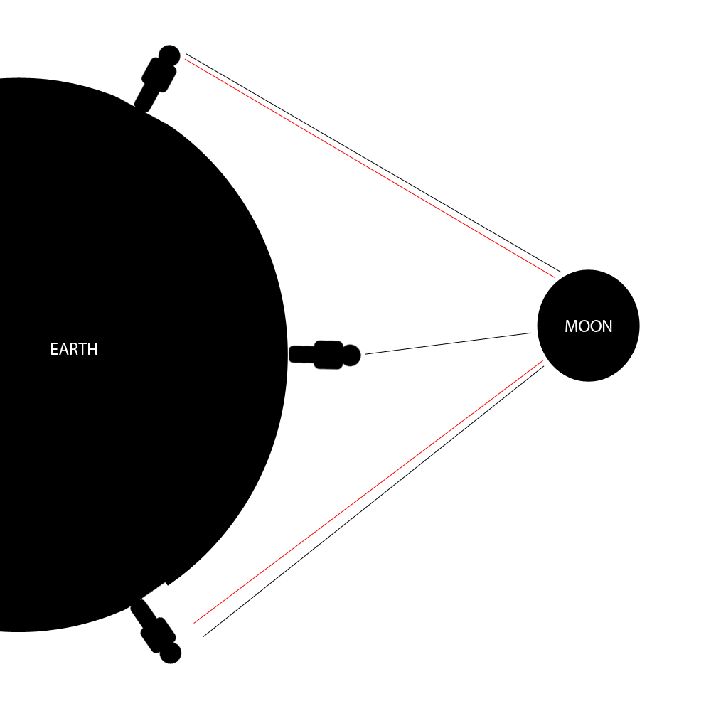
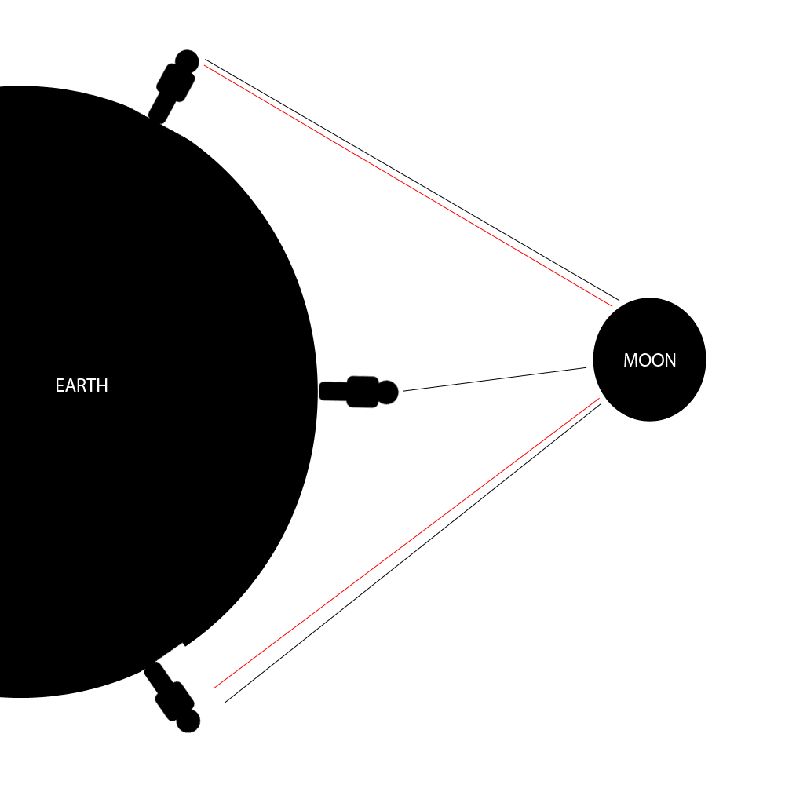

The Boring Stuff
Details
The moon orbits the earth counterclockwise once every 27.3. In this animation it orbits once every 54.6s. The moons rotation speed causes one side of the moon to always be away from earth, meaning that from the surface of earth we can never see that side. This is called Tidal Locking
The earth rotates counterclockwise (Viewed from the north pole) once every 24 hours (Wow!), or in this animation, every 2s
We see the moon differently depending on what point it is in it's orbit, for example, when the moon is between us and the sun, the side facing us is unlit, resulting in us not being able to see the moon's surface.
However, when the earth is between the sun and the moon, the side facing us is lit, resulting in a full moon
 Orbital Stuff
There are 8 phases every 27.3 days. For the first half, the visible part of the moon is "waxing" (Growing), and for the second half it's "waning" (Shrinking). The moon is also described by shape, for example, it is called a crescent when it is crescent shaped, and a gibbous when the dark part is crescent shaped.
Orbital Stuff
There are 8 phases every 27.3 days. For the first half, the visible part of the moon is "waxing" (Growing), and for the second half it's "waning" (Shrinking). The moon is also described by shape, for example, it is called a crescent when it is crescent shaped, and a gibbous when the dark part is crescent shaped.
 There are phases!
People in the southern hemisphere are upside down relative to people in the northern hemisphere, resulting in people in the northern hemisphere seeing the moon and it's phases upside down compared to us. As you get closer to the equator, the moon seems to rotate sideways, until it is sideways.

Upside down?
There are phases!
People in the southern hemisphere are upside down relative to people in the northern hemisphere, resulting in people in the northern hemisphere seeing the moon and it's phases upside down compared to us. As you get closer to the equator, the moon seems to rotate sideways, until it is sideways.

Upside down?
{kind=link}